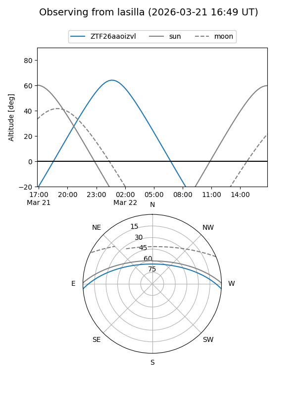
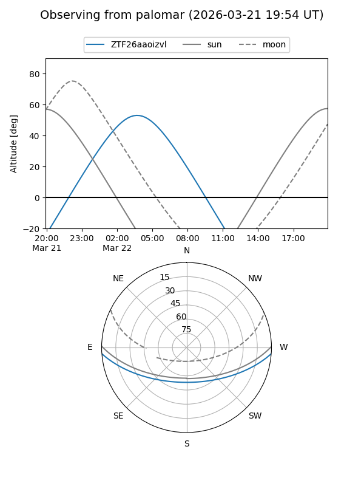

ZTF26aaoizvl
Target ZTF26aaoizvl at 2026-03-22 04:45
Aliases and brokers:
FINK: link
Lasair: link
ALeRCE: link
alt names
ZTF26aaoizvl (ztf,fink_ztf)
Coordinates:
equatorial (ra, dec) = 118.1269,-3.47004
equatorial (HMS+DMS) = 07:52:30.46,-03:28:12.14
galactic (l, b) = (223.1584,+11.90721)
Flags:
Photometry:
last ztfg=15.90
1 ztfg detections
Lightcurve
Visibility


Additional plots